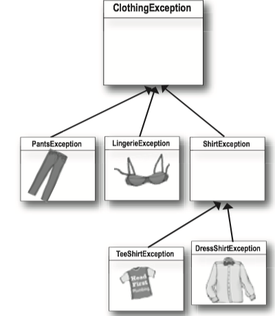

Chapter 11 Exception Handling¶
1 Exception¶
Methods in Java use exceptions to tell the calling code, "Something Bad Happened. I failed."
- If a method can fail at runtime, a method has to declare the exceptions it might throw.
- You may find a throws clause in the risky(exception-throwing) method'sdeclaration.
- It's the risky method that throws the exception to you.
public static Sequencer getSequencer() throws MidiUnavailableException
try/catch¶
If you wrap the risky code in something called a try/catch, the compiler will relax.
A try/catch block tells the compiler that you know an exceptional thing could happen in the method you're calling, and that you're prepared to handle it.
An exception is an object of type Exception.
try { // do risky thing } catch(Exception ex) { // its just like declaring a method argument // try to recover // This code only runs if an Exception is throw }
checked and unchecked exceptions¶
The compiler checks for everything except RuntimeExceptions.
- The compiler cares about all subclasses of Exception, unless they are a special type, RuntimeException.
- Any exception class that extends RuntimeException gets a free pass.
- RuntimeExceptions can be thrown anywhere, with or without throws declarations or try/catch blocks.
- Most RuntimeExceptions come from a problem in your code logic, rather than a condition that fails at runtime in ways that you cannot predict or prevent.
- e.g. You cannot guarantee the server is up. You cannot guarantee the file is there. But you can make sure your code doesn't index of the end of an array.
Flow control in try/catch blocks¶
- If the try succeeds, the code below the catch runs.
- If the try fails, it throws an exception and the rest of the try block doesn't run. And the catch block runs.
Finally block¶
A finally block is where you put code that must run regardless of an exception.
- If the try block fails (an exception), flow control immediately moves to the catch block. When the catch block completes, the finally block runs.
- If the try block succeeds (no exception), flow control skips over the catch block and moves to the finally block.
- If the try or catch block has a return statement, finally block will still run! Flow jumps to the finally, then back to the return.
// You have to turn off the oven no matter what! try { turnOvenOn(); x.bake(); } catch (BakingException ex) { ex.printStackTrace(); } finally { turnOvenOff(); }
Multiple exceptions¶
A method can throw multiple exceptions if it needs to. But a method's declaration must declare all the checked exceptions it can throw.
Stack the catch blocks under the try, one after the other.
public class Laundry { public void doLaundry() throws PantsException, LingerieException{ // code that could throw either exception } } public class Foo { public void go() { Laundry laundry = new Laundry(); try { laundry.doLaundry(); } catch(PantsException pex) { // recovery code } catch(LingerieException lex) { // recovery code } } }

Multiple catch blocks must be ordered from smallest to biggest.
- The higher up the inheritance tree, the bigger the catch "basket". (e.g. ClothingExceptions will catch TeeShirtException and ShirtException)
- With catch blocks, the JVM simply starts at the first one and works its way down until it finds a catch that's broad enough to handle the exception.
- If your first catch block is `catch(Exception ex), the compiler knows there's no point in adding any others -- they'll never be reached.
Polymorphic Exception¶
Exceptions are objects. The benefit for it is that a method doesn't have to explicitly declare every possible exception it might throw; it can declare a superclass of the exceptions.
You can DECLARE exceptions using a supertype of the exceptions you throw.
public void doLaundry() throws ClothingException { }
Same thing with catch blocks. You don't have to write a catch for each possible exception as long as the catch (or catches) you have can handle any exception throw.
You can CATCH exceptions using a supertype of the exception thrown.
try { laundry.doLaundry(); } catch(ClothingException cex) { // can catch any clothingException subclass. // recovery code }
The mother of all catch arguments is type Exception; it will catch any exception, including runtime (unchecked) exceptions, so you probably won't use it outside of testing.
Duck exception¶
If you don't want to handle an exception, you can duck it by declaring it.
// You don't REALLY throw it, but since you don't have a try/catch // for the risky method you call, you are now the risky method. public void foo() throws ReallyBadException { // call risky method without a try/catch laundry.doLaundry(); }
Ducking (by declaring) only delays the inevitable. Sooner or later, somebody has to deal with it.
But what if main() ducks the exception?
- The exception is thrown back to JVM and the JVM shuts down.
import java.io.FileReader; import java.io.IOException; public class test { public void go() throws IOException { try { String fileName = "imdonotexist.file"; FileReader writer = new FileReader(fileName); } catch (IOException ioexcept) { ioexcept.printStackTrace(); } finally { System.out.println("Finally...."); } } public static void main(String[] args) throws IOException { test test1 = new test(); test1.go(); System.out.println("I'm in main."); } }
2 MIDI Music Player¶
JavaSound is a collection of classes and interfaces added to Java starting with version 1.3. JavaSound is split into two parts: MIDI and Sampled. MIDI stands for Musical Instrument Digital Interface, and is a standard protocol for getting different kinds of electronic sound equipment to communicate.
MIDI data doesn't actually include any sound, but it does include the instructions that a MIDI-reading instrument can play back.
Making actual sound¶
How it works in JavaSound:
- Sequencer: It takes all the MIDI data and sends it to the right instruments. It's the thing that plays the music. Think of it like a music CD player.
- Sequence: It is the Song, the musical piece that the Sequencer will play.
- Track: The part of the Sequence that holds the actual information.
- MIDI Event: It is a message that the Sequence can understand.
And you need FOUR steps:
- Get a Sequencer and open it:
Sequencer player = MidiSystem.getSequencer(); player.open(); - Make a new Sequence:
Sequence seq = new Sequence(timing, 4); - Get a new Track from the Sequence:
Track t= seq.createTrack(); - Fill the Track with MidiEvents and give the Sequence to the Sequencer:
t.add(myMidiEvent1); player.setSequence(seq);
import javax.sound.midi.*; public class MiniMiniMusicApp { // this is the first one public static void main(String[] args) { MiniMiniMusicApp mini = new MiniMiniMusicApp(); mini.play(); } public void play() { try { // make (and open) a sequencer, make a sequence and track Sequencer sequencer = MidiSystem.getSequencer(); sequencer.open(); Sequence seq = new Sequence(Sequence.PPQ, 4); Track track = seq.createTrack(); // now make two midi events (containing a midi message) MidiEvent event = null; // first make the message // then stick the message into a midi event // and add the event to the track ShortMessage a = new ShortMessage(); a.setMessage(144, 1, 44, 100); MidiEvent noteOn = new MidiEvent(a, 1);//means at tick one, the above event happens track.add(noteOn); ShortMessage b = new ShortMessage(); b.setMessage(128, 1, 44, 100); MidiEvent noteOff = new MidiEvent(b, 16);//means at tick one, the above event happens track.add(noteOff); // add the events to the track // add the sequence to the sequencer, set timing, and start sequencer.setSequence(seq); sequencer.start(); // new Thread.sleep(1000); sequencer.close(); System.exit(0); } catch (Exception ex) {ex.printStackTrace();} } // close play } // close class
MidiEvent¶
A MidiEvent says what to do and when to do it.
ShortMessage a = new ShortMessage(); a.setMessage(144, 1, 44, 100); MidiEvent noteOn = new MidiEvent(a, 1); track.add(noteon);
Explanation for the code above:
The instructions are in the message, but the MidiEvent adds the moment in time when the instruction should be triggered. This MidiEvent says to trigger message "a" at the first beat (beat 1).